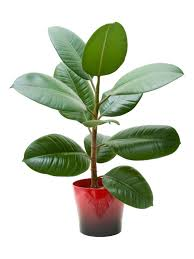
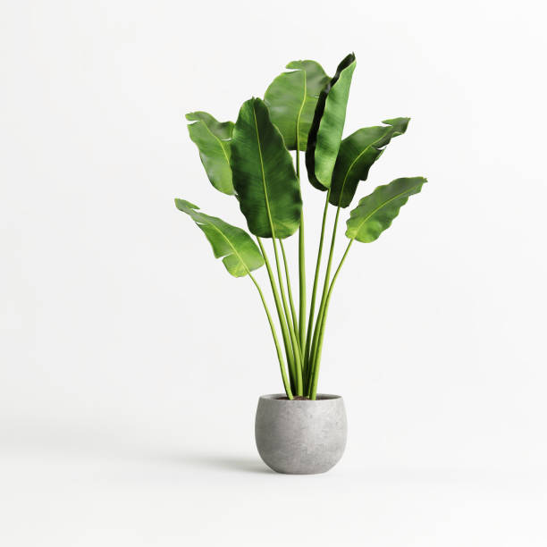
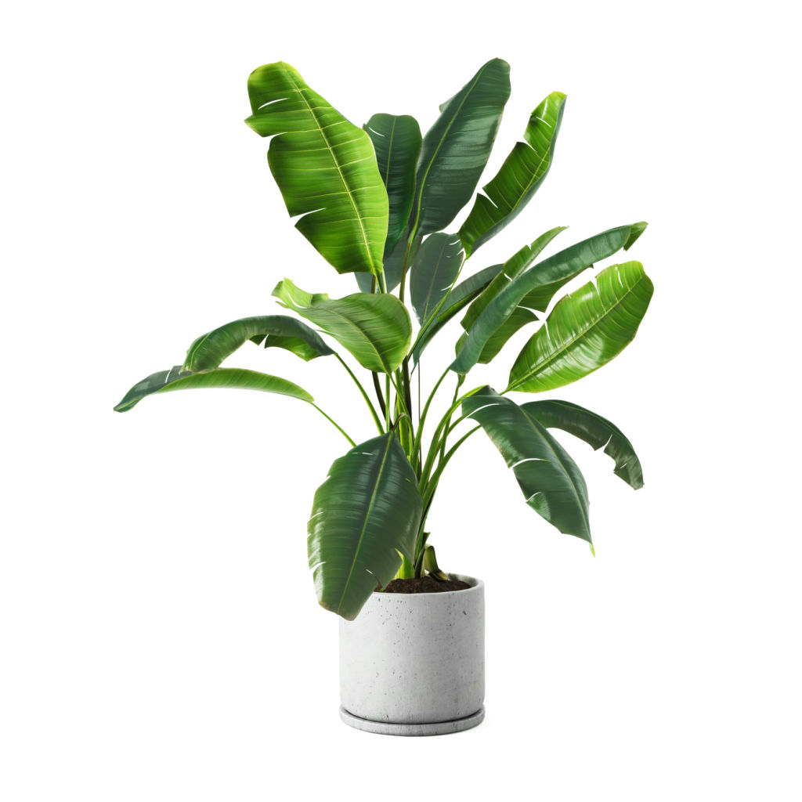

Shop for plants
Note: plant names and descriptions are not accurate and are for displaying purposes!

Monstera Deliciosa
The iconic Swiss Cheese Plant features stunning split leaves and can grow impressively large. Perfect for bright, indirect light and moderate watering. A statement piece that brings tropical vibes to any room and thrives with minimal care.

Golden Pothos
Also known as Devil's Ivy, this trailing vine is nearly impossible to kill. Grows beautifully in hanging baskets or as ground cover. Tolerates low light and irregular watering, making it ideal for beginners and busy plant parents.

Calathea Orbifolia
A showstopper with silver and green striped leaves that move throughout the day. Prefers bright, indirect light and consistently moist soil. Thrives in humid environments, perfect for bathrooms or kitchens with plenty of moisture.

Rubber Plant Ficus
Known for its dramatic, glossy deep-green leaves, this air-purifying plant makes an elegant statement. Enjoys bright light and can reach impressive heights. Water when soil feels dry and watch it flourish into a stunning focal point.

Snake Plant Sansevieria
The ultimate low-maintenance plant with striking upright leaves. Tolerates low light and irregular watering, making it perfect for offices and bedrooms. Known for its air-purifying properties and ability to thrive on neglect.

Fiddle Leaf Fig
A bold statement plant with large, violin-shaped leaves that command attention. Prefers bright, indirect light and consistent watering. Once it finds its spot, it rewards you with lush growth and architectural beauty.